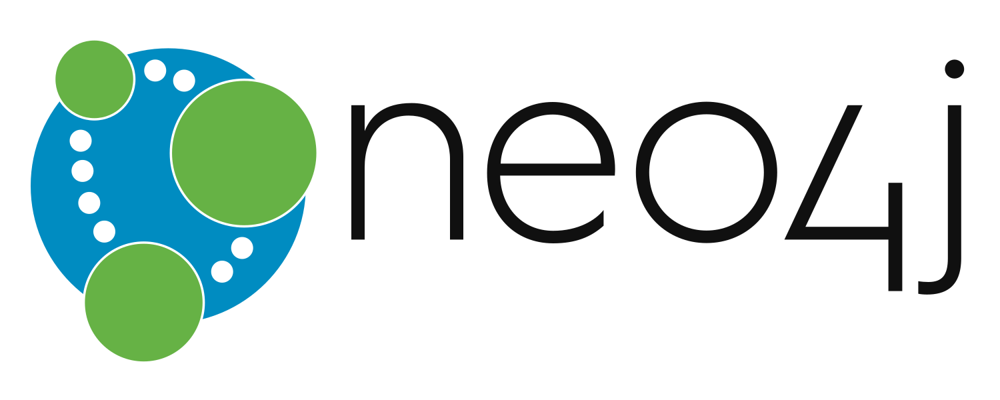

/ Devroom
After two years without the Graph Systems and Algorithms Devroom we want to bring back together all the graph enthusiasts, researchers, developers, practitioners out there to talk about the latest advancements in the open source graph world. We think that especially now it is important to create a space where people can share their ideas and gain new inspirations.
FOSDEM is an annual software developers meeting attended by over 8000+ free and open source enthusiasts from all over the world. The conference is held at ULB Solbosch Brussels, Belgium. The devroom will take place on Saturday, 4th February 2023
In the last year, many organizations added graph analytical capabilities to their systems, e.g. Neo4j, Arango DB and Redis graph, to fulfill the rising demand of analytical use-cases, often to be executed on a steadily growing amount of data.
Graph based data science and machine learning approaches are becoming more and more popular with approaches like graph embeddings and graph neural networks.
Graph query languages became mainstream. GQL, an effort driven by many graph database vendors, will be the first query language since SQL standardized by the ISO. Research groups work on standardizing property graph schemas.
In previous devrooms we saw many great presentations and demos. After two years of pandemic we want to provide a space for actors and maintainers of graph solutions, researchers, geeks and open source hackers to present their latest work. As always, the devroom will invite both, beginners and experts.
This list is not closed, other related topics are always welcome.
Important Note The 2023 edition of FOSDEM will be an on-site event. All presenters should be present in-person in Brussels. The presentations will be recorded and presenting at FOSDEM implies permission to record your session and distribute the recording afterwards. All videos will be made available under the standard FOSDEM content license (CC-BY).
This year's Graph Systems and Algorithms Devroom will be half a day. In order to give as many people as possible the chance to present their work, every slot will be 25 minutes long, including 5 minutes of Q&A.
Talks are submitted via FOSDEM's conference system Pentabarf.
In order to submitt a talk please follow these steps:
The devroom is organized by
FOSDEM 2021
